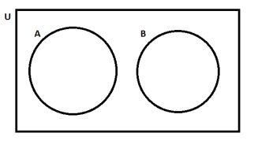
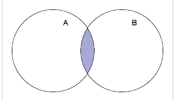
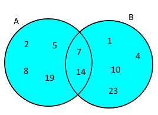
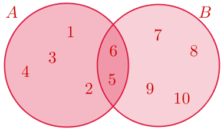
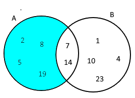

Um conjunto é uma coleção qualquer de objetos, que podem ser números ou não. Por exemplo:
a) Conjunto dos númeoros primos:
P = {2,3,5,7,11,13,17,...}
b) Conjuto dos meses do ano:
M = {Janeiro, Fevereiro, Março, Abril, Maio,..., Dezembro}
Os objetos que formam um conjunto são chamados de elementos ou mebros. Cada conjunto é determinado unicamente por seus elementos, ou seja, conjuntos que
reúnam os mesmos elementos são idênticos.
Costuma-se utilizar o símbolo E para a frase "pertence à".
13 E P, ou seja, o número 13 pertence ao conjunto P (conjunto dos n° primos).
16 ∉ P, ou seja, o número 16 não pertence ao conjunto P (conjunto dos n° primos).
Para facilitar o estudo dos conjuntos, e as relações existentes entre eles, é util, algumas vezes, representar diagramaticamente os conjuntos. Vejamos
alguns exemplos.
a) Se os conjuntos A e B, não possuem elementos comuns, representamos:

U é conjunto universo.
b) Se A e B têm elementos comuns, A Ȼ B ∩ B Ȼ A, representamos:

a) Conjunto Unitário:
é um conjunto que possui apenas um elemento.
b) Conjunto Vazio:
é um conjunto que não possui nenhum elemneto. É representado por {} ou Ø.
c) Subconjunto:
é um conjunto que possui elementos contidos em outros conjuntos.
B Ɔ A (B contém A, donde os elementos de A estão em B)
A C B (A está contido em B, ou seja, todos os elementos de A estão em B)
C Ȼ B (C não está contido em B, na medida em que os elementos do conjuntos são diferentes)
C Ȼ A (C não está contido em A)
Existem algumas operações que podem ser realizadas entre conjuntos, são elas: intersecção, união e diferença.
Considerando os conjuntos A e B contidos num conjunto universo U, as operações entre eles podem ser representadas da seguinte maneira:
Intersecção:
A intersecção de A com B é o conjunto formado pelos elementos comuns a A e B.
Notação A ∩ B.
A ∩ B = {x / x Є A e x Є B}
União:
A união de A com B é o conjunto formado por todos os elementos pertencentes a A ou a B.
Notação A U B.
A U B = {x / x Є A ou x Є B}
Diferença:
A diferença entre A e B é o conjunto formado pelos elementos que pertencem a A e não pertencem a B.
Notação A – B.
A – B = {x / x Є A e x não pertence a B}
União:

Sendo A = {2,5,7,8,14,19}, B = {1,4,7,10,14,23} e A U B = {1,2,4,5,7,8,10,14,19,23}
Intersecção:

Sendo A = {1,2,3,4,5,6}, B = {5,6,7,8,9,10} e A ∩ B = {5,6}
Diferença:

Sendo A = {1,2,3,4,5,6}, B = {5,6,7,8,9,10} e A - B = {2,8,5,19}
Os conjuntos numéricos reúnem diversos conjuntos cujos elementos são números. Eles são
formados pelos números naturais, inteiros, racionais, irracionais e reais.
Números Naturais (N):
É o conjunto formado pelos números inteiros positivos, começando pelo zero.
N = {0,1,2,3,4,5,6,7,8,9,10,...}
Números Inteiros (Z):
É o conjunto formado pelos números inteiros positivos e negativos.
Z = {...,-3,-2,-1,0,1,2,3,...}
Números Racioais (Q):
É o conjunto formado por todo números que pode ser escrito na forma de fração. Assim temos que um números racional é da forma a/b, com a E Z e b ≠ 0.
Q = {...,-2,-1/3,-1,-1/4,0,1/2,1,5/2,...}
Números Irracionais (I):
É o conjunto formado pelos números que não podem ser escritos na forma de fração, ou seja, que não apresentam forma decimal exata, ou dizima periódica.São exemplos:
π = 3,14159...(pi)
√2
√5
Números Reais (R):
O conjunto dos números reais é representado por R. Esse conjunto é formado pelos números racionais (Q) e irracionais (I). Assim, temos que
R = Q ∪ I. Além disso, N, Z, Q e I são subconjuntos de R.
Mas, observe que se um número real é racional, ele não pode ser também irracional. Da mesma maneira, se ele é irracional, não é racional.